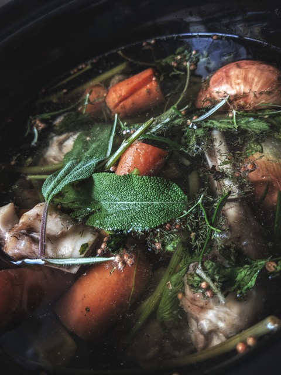

Chicken and beef broth

Extremely rich, healthy and full of minerals. A remedy to cold used for generations - it's truly a liquid gold!
Ingredients
- 2 pounds beef bones
- 1 chicken carcass plus wings
- 6 cups cool water, or as needed
- 2 tablespoons cider vinegar
- 2 onions
- 2 carrots
- 1 parsnip
- allspice
- 3 cloves garlic, crushed
- 2 bay leaves
- Fresh sage
- Fresh parsley
Steps
- Pour water into large pot, start boiling it
- Add bones to the pot along with all spices and cider vinegar
- Wash veg, no need to peel them.
- Slice veg in half
- Add veg and herbs to the pot
- Once it starts to boil again, set the heat to low
- Cook under the lid for minimum four hours, but longer if possible to make the best out of it
- Once fully cooked, pour it through the sieve into the jars
- You can store it in the fridge once it cools down
Back to index